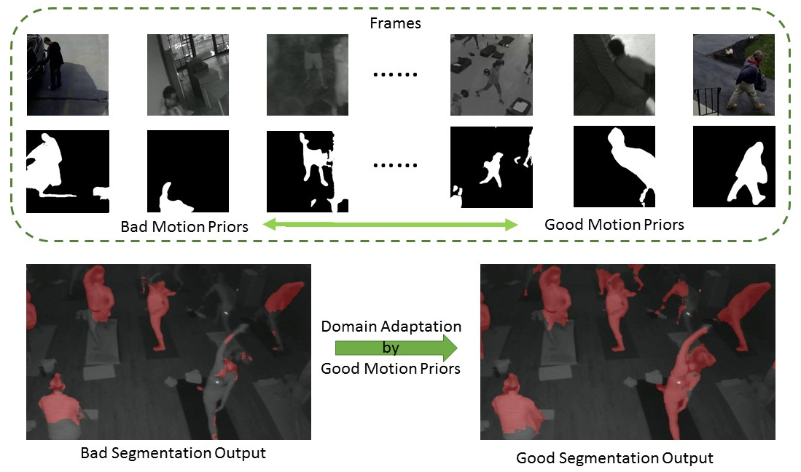
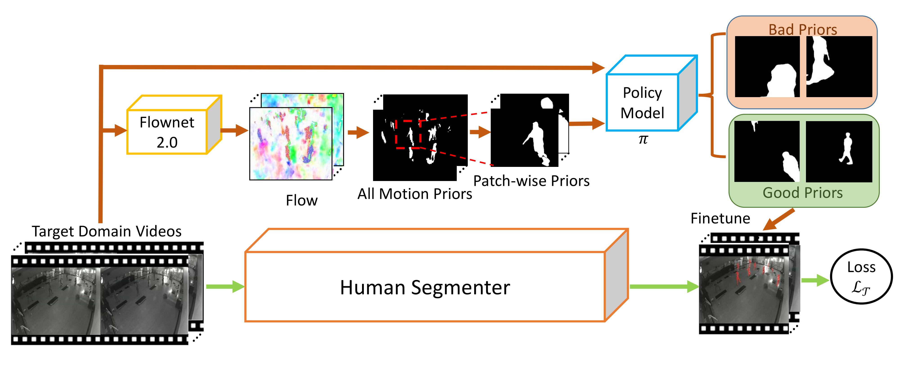
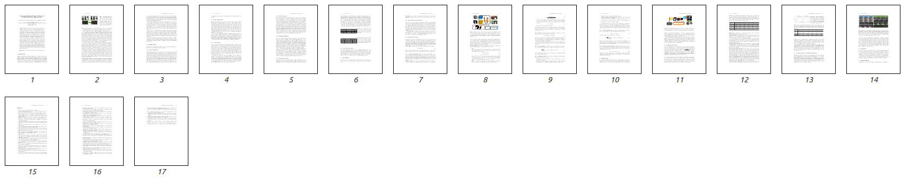

Leveraging Motion Priors in Videos for
Improving Human Segmentation
Yu-Ting Chen, Wen-Yen Chang, Hai-Lun Lu, Tingfan Wu, Min Sun
European Conference on Computer Vision (ECCV) 2018
Abstract

In this work, we propose to leverage “motion prior” in videos which is potentially corresponding to human segments for improving human segmentation in a weakly-supervised active learning setting.
We propose to learn a memory-network-based policy model to select strong candidate segments (referred to as strong motion prior) through reinforcement learning.
In a newly collected surveillance camera dataset and a publicly available UrbanStreet dataset, our proposed method improves the performance of human segmentation across multiple scenes and modalities (i.e., RGB to Infrared (IR)).
Last but not least, our method is empirically complementary to existing domain adaptation approaches such that additional performance gain is achieved by combining our weakly-supervised active learning approach with domain adaptation approaches.
Method

Our goal is to select a set of "motion prior" from video frames. The candidate motion priors are obtained from binarized optical flow maps, which defines a foreground pixel if the flow magnitude is larger than a threshold.
These automatically obtained motion priors inevitably will be noisy and contain outliers. Hence, we propose a memory-network-based policy model, trained by reinforcement learning on the source domain. For inference on the target domain, we use the policy model to select more accurate ones instead of directly finetuning the segmenter with all noisy labels.
Resources

Example